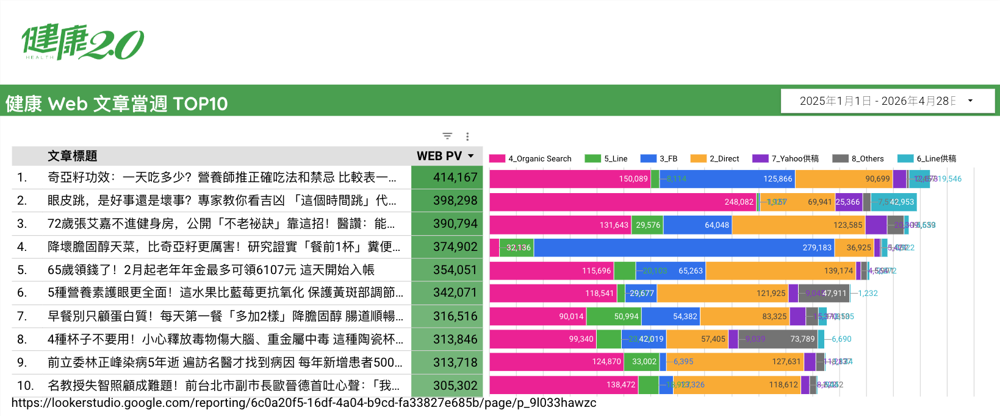

資料區間：2025/01/01 ～ 2025/12/31 ｜ 報告產製：2026年4月28日
本報告依據 TVBS「健康2.0」網站 2025 年全年度發布之 7,982 篇文章（2025/01/01～2025/12/31），對全體文章進行逐篇閱讀與系統化量化分析，涵蓋編輯風格、熱門議題、症狀偏好、文章篇幅、讀者輪廓、政策連動，以及睡眠主題深度耕耘等面向，旨在提供編輯、產品、業務等團隊內容策略參考依據。注意：此分析是針對內容「回推」文章可能帶給讀者的影響，不是在分析點擊成效！
全年共發布 7,982 篇文章，月均約 665 篇，12月發文量最高（730篇），顯示年末健康意識的衝刺策略。
飲食／營養（54.7%）、運動體能（38.5%）、免疫發炎（37.0%）為三大核心議題，呈現「吃得對、動得到、不發炎」的整體內容策略。
逾 62.7% 文章引用醫師，19.1% 引用營養師，顯示「名醫背書」是健康2.0最核心的信任背書機制。
睡眠相關文章達 1,456 篇（18.2%），但標題明確標示「睡眠」者僅 170 篇，有高度未開發的「好眠」內容機會。
疲勞/倦怠以 14.2% 高居症狀首位，但「疲勞」本身並不是一個單一疾病——它是幾乎所有慢性病、睡眠問題、心理健康問題的共同症狀。這意味著健康2.0以「疲勞」作為超級引導入口。
35-65 歲為主要核心，45-60 歲是最密集區間，以女性為主的「主動健康管理者」，具慢性病預防意識，習慣透過手機碎片化閱讀獲取健康知識。
健康2.0 的整體編輯風格可歸納為「專家權威 × 實用清單 × 危機警示」三角模型：
逾 62.7% 文章援引醫師，開篇即拋出醫師姓名與服務機構，以白袍信任感降低讀者的認知門檻。
67.9% 的文章標題含數字，19.4% 採「X大/X招」結構，正文高度使用小標、條列呈現，讓資訊快速被掃讀。
72.4% 的文章在正文中含有「小心、危險、注意、千萬別」等警示性語言，以危機感驅動讀者點閱與閱讀完成。
| 職稱類型 | 出現篇數 | 占比（%） |
|---|---|---|
| 醫師（西醫） | 5,003 | 62.7% |
| 專家（泛稱） | 4,906 | 61.5% |
| 主任（科主任） | 1,927 | 24.1% |
| 營養師 | 1,528 | 19.1% |
| 中醫師 | 1,014 | 12.7% |
| 外科醫師 | 560 | 7.0% |
| 院長 | 556 | 7.0% |
| 內科醫師 | 498 | 6.2% |
| 教授 | 452 | 5.7% |
| 博士 | 205 | 2.6% |
| 副院長 | 201 | 2.5% |
| 護理師 | 179 | 2.2% |
| 藥師 | 143 | 1.8% |
| 心理師 | 132 | 1.7% |
| 執行長 | 126 | 1.6% |
| 董事長 | 103 | 1.3% |
| 物理治療師 | 78 | 1.0% |
| 牙醫師 | 67 | 0.8% |
| 研究員 | 63 | 0.8% |
| 諮商師 | 25 | 0.3% |
| 排名 | 議題 | 出現篇數 | 占比（%） |
|---|---|---|---|
| 1 | 飲食/營養 | 4,370 | 54.7% |
| 2 | 運動/體能 | 3,070 | 38.5% |
| 3 | 免疫/過敏/發炎 | 2,951 | 37.0% |
| 4 | 情緒/心理健康 | 2,818 | 35.3% |
| 5 | 心血管疾病 | 2,515 | 31.5% |
| 6 | 腸胃/消化系統 | 2,432 | 30.5% |
| 7 | 老化/銀髮族 | 2,263 | 28.4% |
| 8 | 體重/減重 | 2,133 | 26.7% |
| 9 | 糖尿病/血糖 | 2,123 | 26.6% |
| 10 | 中醫/傳統醫學 | 2,030 | 25.4% |
| 11 | 癌症 | 1,863 | 23.3% |
| 12 | 皮膚健康 | 1,811 | 22.7% |
| 13 | 睡眠 | 1,584 | 19.8% |
| 14 | 骨骼/關節 | 1,183 | 14.8% |
| 15 | 兒童/青少年健康 | 1,159 | 14.5% |
| 16 | 更年期/荷爾蒙 | 1,102 | 13.8% |
| 17 | 腎臟疾病 | 959 | 12.0% |
| 18 | 呼吸系統 | 919 | 11.5% |
| 19 | 肝臟疾病 | 901 | 11.3% |
| 20 | 視力/眼睛 | 730 | 9.1% |
| 21 | 性/婦科健康 | 721 | 9.0% |
| 22 | 疫苗/防疫 | 647 | 8.1% |
| 23 | 口腔/牙齒 | 424 | 5.3% |
| 24 | 甲狀腺 | 265 | 3.3% |
依據議題性質，可分為以下五大內容群：
涵蓋議題：飲食/營養、運動/體能、體重/減重、睡眠
解讀：合計涵蓋文章超過 50%（各群有重疊），代表健康2.0最基礎的內容地基。這類文章的共通特色是「讀者自己就能行動」，無需就醫，閱讀後有立即可操作的行動建議，轉換率（收藏、分享）最高。
涵蓋議題：糖尿病/血糖、心血管疾病、高血壓、高血脂
解讀：此群議題高度關聯 45 歲以上讀者的切身需求，且具有長尾搜尋價值——「血糖高怎麼辦」「血壓 180 要急診嗎」等 FAQ 型文章在此群最多。
涵蓋議題：癌症、腎臟、肝臟、甲狀腺、呼吸系統
解讀：此群文章篇幅較長（癌症分類平均 1,368 字），讀者多為有具體需求（自身或家人確診），是高意圖、高黏著的讀者群。
涵蓋議題：情緒/心理健康、免疫/過敏/發炎、皮膚健康
解讀：情緒心理健康以 35.3% 高比例入榜，顯示健康2.0已在傳統生理健康之外，積極布局「全人健康」概念，反映後疫情時代對心理健康的重視趨勢。
涵蓋議題：老化/銀髮、更年期/荷爾蒙、兒童/青少年、性/婦科
解讀：此群服務特定人生階段的讀者，壯世代（420篇）、更年期（1,102篇）的高比例，呼應台灣高齡化社會與女性健康意識抬頭的雙重趨勢。
| 排名 | 癌症類別 | 篇數 | 占比 |
|---|---|---|---|
| 1 | 大腸癌/直腸癌 | 446 | 5.6% |
| 2 | 乳癌 | 416 | 5.2% |
| 3 | 肺癌 | 341 | 4.3% |
| 4 | 肝癌 | 247 | 3.1% |
| 5 | 胃癌 | 160 | 2.0% |
| 6 | 胰臟癌 | 142 | 1.8% |
| 7 | 攝護腺癌 | 134 | 1.7% |
| 8 | 血癌/淋巴癌 | 123 | 1.5% |
| 9 | 食道癌 | 89 | 1.1% |
| 10 | 口腔癌 | 78 | 1.0% |
| 11 | 卵巢癌 | 73 | 0.9% |
| 12 | 子宮頸癌 | 69 | 0.9% |
| 13 | 皮膚癌 | 68 | 0.9% |
| 14 | 子宮內膜癌 | 59 | 0.7% |
| 15 | 腎臟癌 | 49 | 0.6% |
| 16 | 膀胱癌 | 49 | 0.6% |
| 17 | 腦瘤 | 44 | 0.6% |
| 18 | 甲狀腺癌 | 41 | 0.5% |
| 19 | 鼻咽癌 | 41 | 0.5% |
| 20 | 骨癌 | 8 | 0.1% |
| 排名 | 症狀類別 | 出現篇數 | 占比（%） |
|---|---|---|---|
| 1 | 疲勞/倦怠 | 1,136 | 14.2% |
| 2 | 糖尿病相關症狀（多尿多喝） | 1,089 | 13.6% |
| 3 | 焦慮 | 1,019 | 12.8% |
| 4 | 高血壓 | 822 | 10.3% |
| 5 | 皮膚癢/過敏 | 781 | 9.8% |
| 6 | 水腫 | 735 | 9.2% |
| 7 | 失眠/睡眠問題 | 614 | 7.7% |
| 8 | 頭痛 | 552 | 6.9% |
| 9 | 胃痛/胃脹/逆流 | 537 | 6.7% |
| 10 | 憂鬱/情緒低落 | 517 | 6.5% |
| 11 | 腹瀉 | 494 | 6.2% |
| 12 | 咳嗽 | 486 | 6.1% |
| 13 | 呼吸困難/氣喘 | 455 | 5.7% |
| 14 | 心悸 | 454 | 5.7% |
| 15 | 高血脂 | 453 | 5.7% |
| 16 | 頭暈/眩暈 | 436 | 5.5% |
| 17 | 腰背痛 | 387 | 4.8% |
| 18 | 頻尿/排尿困難 | 350 | 4.4% |
| 19 | 關節痛 | 316 | 4.0% |
| 20 | 肩頸痠痛 | 245 | 3.1% |
| 21 | 眼睛乾/視力模糊 | 241 | 3.0% |
| 22 | 掉髮 | 203 | 2.5% |
| 23 | 肌肉痠痛 | 192 | 2.4% |
| 24 | 耳鳴 | 141 | 1.8% |
| 25 | 便秘 | 48 | 0.6% |
依症狀性質分群：
涵蓋：高血壓、高血脂、糖尿病症狀、心悸
解讀：三高相關症狀合計約 2,000+ 篇次，是健康2.0最核心的症狀書寫軸，與台灣慢性病高盛行率直接對應。
涵蓋：疲勞/倦怠、焦慮、憂鬱、失眠
解讀：合計超過 3,000 篇次，是成長最快的書寫領域，反映後疫情時代讀者對身心雙重健康的強烈需求。
涵蓋：胃痛/胃脹、腹瀉、皮膚癢/過敏
解讀：日常最常見的不適感，文章通常附帶即時可操作的飲食建議。
涵蓋：頭痛、腰背痛、關節痛、肩頸痠痛
解讀：與辦公族、中老年讀者高度重疊，但目前覆蓋率相對偏低，有補足空間。
涵蓋：掉髮、耳鳴、眼睛乾
解讀：出現比例偏低，但搜索意圖明確，可發展為垂直深耕專題。
中位數 31 字，最長 83 字
佔全體標題 80.1%，形成高度標準化的標題長度
5,416 篇，數字強化資訊密度與點擊吸引力
5,516 篇，驚嘆號製造緊迫感與情緒強度
標題句型分析：
| 句型特徵 | 篇數 | 占比（%） |
|---|---|---|
| 含驚嘆號（！） | 5,516 | 69.1% |
| 含數字（1、2、3...） | 5,416 | 67.9% |
| 含問號（？） | 2,263 | 28.4% |
| 清單式（X大/X招/X種） | 1,549 | 19.4% |
| 指標 | 數值 |
|---|---|
| 平均內文長度 | 1,269 字 |
| 中位數內文長度 | 1,123 字 |
| 最長內文 | 14,362 字 |
| 最長文章 ID | 359171 |
| 最長文章標題 | 猛健樂比週纖達更快瘦？1個月瘦多少？2025最新價格、副作用指南 |
| 篇幅區間 | 篇數 | 占比（%） |
|---|---|---|
| 500字以下 | 31 | 0.4% |
| 500-999字 | 2,662 | 33.4% |
| 1,000-1,999字（黃金區） | 4,776 | 59.8% |
| 2,000-2,999字 | 370 | 4.6% |
| 3,000-4,999字 | 73 | 0.9% |
| 5,000字以上 | 70 | 0.9% |
| 主分類 | 篇數 | 平均內文長度 | 中位數 |
|---|---|---|---|
| 醫學百科 | 5 | 2,429字 | 1,441字 |
| 癌症 | 439 | 1,368字 | 1,317字 |
| 醫療 | 1,888 | 1,338字 | 1,222字 |
| 營養好食 | 1,155 | 1,317字 | 1,101字 |
| 影音 | 355 | 1,282字 | 1,205字 |
| 樂生活 | 1,985 | 1,261字 | 1,084字 |
| 廣告業務 | 90 | 1,217字 | 1,156字 |
| 養生 | 1,132 | 1,212字 | 1,073字 |
| 壯世代 | 420 | 1,202字 | 1,142字 |
| 中醫 | 307 | 1,168字 | 1,116字 |
| 運動 | 26 | 1,156字 | 1,005字 |
| 其他 | 38 | 889字 | 780字 |
| 食譜 | 142 | 704字 | 686字 |
主分類分佈：
| 主分類 | 篇數 | 占比 |
|---|---|---|
| 樂生活 | 1,985 | 24.9% |
| 醫療 | 1,888 | 23.7% |
| 營養好食 | 1,155 | 14.5% |
| 養生 | 1,132 | 14.2% |
| 癌症 | 439 | 5.5% |
| 壯世代 | 420 | 5.3% |
| 影音 | 355 | 4.4% |
| 中醫 | 307 | 3.8% |
| 食譜 | 142 | 1.8% |
| 廣告業務 | 90 | 1.1% |
| 其他 | 38 | 0.5% |
| 運動 | 26 | 0.3% |
| 醫學百科 | 5 | 0.1% |
| 政策類型 | 出現篇數 | 占比（%） |
|---|---|---|
| 健保/醫療補助 | 544 | 6.8% |
| 食安政策 | 263 | 3.3% |
| 長照政策 | 129 | 1.6% |
| 疫苗政策 | 128 | 1.6% |
| 癌症篩檢 | 108 | 1.4% |
| 空污/環境健康 | 95 | 1.2% |
| 月份 | 發文篇數 | 對應節氣/節慶/趨勢 |
|---|---|---|
| 2025-01 | 579 | 農曆年前備戰（健康零食、年節飲食） |
| 2025-02 | 644 | 農曆春節/元宵，年後健康話題高峰 |
| 2025-03 | 687 | 驚蟄節氣、春季養生啟動 |
| 2025-04 | 688 | 清明節、春季過敏、換季保健 |
| 2025-05 | 680 | 母親節、端午備戰、立夏 |
| 2025-06 | 642 | 端午節後、夏至、夏季防曬飲食 |
| 2025-07 | 684 | 大暑、夏季消暑養生、中暑警示 |
| 2025-08 | 688 | 處暑、父親節、夏秋換季 |
| 2025-09 | 681 | 中秋節、重陽前哨、秋補啟動 |
| 2025-10 | 659 | 重陽節、秋季養生高峰 |
| 2025-11 | 620 | 立冬進補、感冒季警示 |
| 2025-12 | 730 | 冬至、年末健康盤點、聖誕、跨年 |
分析方法：從文章「內文」中出現的目標族群提示語（同義詞對應）、寫作語氣模式、文章議題，交叉推斷健康2.0的核心讀者特徵。全數 7,982 篇逐篇分析，不抽樣。再次強調：這是利用文章回推出來用戶可能的樣貌，不是在分析GA4數據結果唷！
| 語氣類型 | 出現篇數 | 占比（%） | 說明 |
|---|---|---|---|
| 警示型（小心、危險、千萬別） | 5,775 | 72.4% | 最主要語氣，以危機感驅動點閱 |
| 解答型（怎麼辦、教你、方法） | 4,199 | 52.6% | 提供可執行的行動步驟 |
| 數字列舉型（1.2.3./第一第二） | 3,403 | 42.6% | 清單結構，便於快速掃讀 |
| 名醫背書型（醫師指出、研究顯示） | 2,196 | 27.5% | 以專業權威建立信任 |
| 提問式/教育型（你知道嗎？） | 657 | 8.2% | 挑起好奇心的引導型語氣 |
| 族群 | 出現篇數 | 占比（%） |
|---|---|---|
| 中老年/熟齡（50-65歲） | 1,798 | 22.5% |
| 女性族群 | 1,698 | 21.3% |
| 上班族（久坐/職場壓力） | 1,031 | 12.9% |
| 慢性病患者/三高族群 | 1,014 | 12.7% |
| 家長/父母 | 724 | 9.1% |
| 青年族群（20-30歲） | 631 | 7.9% |
| 癌友/癌症家屬 | 623 | 7.8% |
| 孕婦 | 464 | 5.8% |
交叉分析議題偏好（飲食54.7%、運動38.5%、心血管31.5%）、族群提示語（中老年22.5%、女性21.3%）、語氣模式（警示72.4%），健康2.0的核心讀者輪廓如下：
| 讀者特徵維度 | 描述 |
|---|---|
| 年齡層 | 35-65 歲為主要核心，45-60 歲是最密集區間 |
| 性別 | 女性略佔多數（更年期、婦科、骨鬆、皮膚相關文章比重高） |
| 健康狀態 | 已有慢性病者（三高、糖尿病）或強烈預防意識的「潛在患者」 |
| 教育背景 | 高中至大學程度，能理解醫學術語但需要通俗化解釋 |
| 生活型態 | 忙碌的家庭照顧者（需兼顧自身與長輩健康） |
| 行為模式 | 透過 LINE 分享文章給家人，Google 搜尋症狀入口點進網站 |
| 動機 | 「看到症狀→確認自己或家人是否需要就醫」的功能性閱讀 |
出現身體症狀（疲勞、頭痛、血壓異常）或看到親友分享的健康新聞
以症狀或食物名稱 Google 搜尋（如「高血壓 怎麼辦」「吃樹葡萄 功效」）
點入 TVBS 健康2.0，快速掃讀標題→小標→專家姓名→結論
根據「醫師/營養師說可以」決定是否採取行動
改變飲食習慣、購買保健品、預約門診、或分享給家人
設定健康2.0 LINE 帳號，或收藏網頁，下次出現症狀再回查
「擔心自己和家人健康的 45 歲女性，在 LINE 看到文章後，想知道量到的「血壓 138」 ，到底需不需要看醫生。」— 健康2.0核心讀者輪廓定義
經過全數 7,982 篇文章的逐一分析，健康2.0的內容DNA可歸納為以下五條核心鏈：
62.7% 文章引用醫師，以「醫師說」為最強信任鎖鏈，降低讀者質疑門檻。
67.9% 標題含數字，42.6% 正文使用數字列舉，把複雜醫學知識轉化為可快速掃讀的清單。
52.6% 文章採解答型語氣，每篇皆提供「這樣做就對了」的即時可操作建議。
72.4% 文章含警示語言，以「你可能犯了這個錯！」激發讀者的危機感與點閱動機。
標題平均 30 字、黃金篇幅 1,000-1,999 字、結構清晰，符合 Google 健康類 EEAT 內容指引。
| DNA 元素 | 說明 |
|---|---|
| D 醫生背書（Doctor-endorsed） | 62.7% 文章引用醫師，以「醫師說」為最強信任鎖鏈，降低讀者質疑門檻。 |
| N 數字化（Numbered） | 67.9% 標題含數字，42.6% 正文使用數字列舉，把複雜醫學知識轉化為可快速掃讀的清單。 |
| A 可行動（Actionable） | 52.6% 文章採解答型語氣，每篇皆提供「這樣做就對了」的即時可操作建議。 |
| W 警示驅動（Warning-driven） | 72.4% 文章含警示語言，以「你可能犯了這個錯！」激發讀者的危機感與點閱動機。 |
| S 搜尋優化（Search-optimized） | 標題平均 30 字、黃金篇幅 1,000-1,999 字、結構清晰，符合 Google 健康類 EEAT 內容指引。 |
內文含睡眠、失眠、好眠等關鍵字，占全體文章 18.2%
僅占全體 2.1%，顯示睡眠多以「配角」而非「主角」出現
| 統計項目 | 篇數 | 占比（%） |
|---|---|---|
| 廣義睡眠相關文章（內文含睡眠、失眠、好眠等） | 1,456 | 18.2% |
| 標題明確含睡眠關鍵字文章 | 170 | 2.1% |
| 面相 | 出現篇數 | 統計方式 |
|---|---|---|
| 睡眠與疾病（睡不好引發心血管、糖尿病等） | 449 | 內文搜尋 |
| 睡眠與體重（睡不好容易胖） | 250 | 內文搜尋 |
| 睡眠與老化（年紀大睡眠品質變差） | 247 | 內文搜尋 |
| 睡前習慣（就寢前的行為建議） | 214 | 內文搜尋 |
| 失眠原因探討（找出失眠根因） | 23 | 內文搜尋 |
| 睡眠時間長短（最佳睡幾小時） | 9 | 內文搜尋 |
| 睡眠關鍵字 | 出現篇數 |
|---|---|
| 失眠 | 495 |
| 睡眠品質 | 428 |
| 睡前 | 364 |
| 助眠 | 203 |
| 睡眠時間 | 103 |
| 褪黑激素 | 98 |
| 好眠 | 95 |
| 睡眠障礙 | 89 |
| 睡眠呼吸中止 | 77 |
| 多夢 | 51 |
| 睡姿 | 47 |
| 熟睡 | 39 |
| 打呼 | 34 |
| 午睡 | 32 |
| 深度睡眠 | 32 |
| 早醒 | 26 |
| 入睡困難 | 25 |
| 半夜醒 | 22 |
| 打鼾 | 20 |
| 睡不夠 | 7 |
| 好眠解方 | 出現篇數 | 占全體文章（%） |
|---|---|---|
| 運動改善睡眠（運動、有氧、走路等） | 756 | 9.5% |
| 呼吸/冥想/正念 | 495 | 6.2% |
| 睡眠環境調整（溫度、遮光、寢具） | 370 | 4.6% |
| 飲食調整（助眠食物、色胺酸） | 304 | 3.8% |
| 中醫調理（針灸、藥膳、穴位） | 287 | 3.6% |
| 3C/藍光管控 | 170 | 2.1% |
| 就醫/藥物（安眠藥、睡眠門診） | 129 | 1.6% |
| 褪黑激素補充 | 98 | 1.2% |
針對 2025/1/1-2026/4/28 GA4 瀏覽數(Web PV) TOP10 榜單中，有 7 篇文章是 2025 年發佈的，逐篇完整閱讀全文後，對照本報告分析框架（編輯風格 DNA、議題分群、標題句型、讀者輪廓等），進行系統化特徵比對，找出這 7 篇文章的共同成功要素。
分析日期：2026年4月29日
| Top | 文章標題 | 分類 | Web PV |
|---|---|---|---|
| 1 | 奇亞籽功效：一天吃多少？營養師推正確吃法和禁忌 比較表一次看 | 營養好食 | 414,167 |
| 2 | 72歲張艾嘉不進健身房，公開「不老祕訣」靠這招！醫讚：能防骨鬆 | 養生 | 390,794 |
| 3 | 降壞膽固醇天菜，比奇亞籽更厲害！研究證實「餐前1杯」糞便排油量增55% | 營養好食 | 374,902 |
| 4 | 5種營養素護眼更全面！這水果比藍莓更抗氧化 保護黃斑部調節老花眼 | 營養好食 | 342,071 |
| 5 | 早餐別只顧蛋白質！每天第一餐「多加2樣」降膽固醇 腸道順暢100％ | 營養好食 | 316,516 |
| 6 | 4種杯子不要用！小心釋放毒物傷大腦、重金屬中毒 這種陶瓷杯也NG | 樂生活 | 313,846 |
| 7 | 前立委林正峰染病5年逝 遍訪名醫才找到病因 每年新增患者500人 | 醫療 | 313,718 |

對照報告第4-1節：全體 7,982 篇標題分析
| 句型特徵 | 全體占比 | 7篇命中情況 | 7篇命中率 |
|---|---|---|---|
| 含驚嘆號（！） | 69.1%（5,516篇） | Top1 奇亞籽、Top2 張艾嘉、Top3 降膽固醇、Top4 5種護眼、Top5 早餐蛋白質、Top6 4種杯子 共6篇 | 6/7 = 85.7% |
| 含數字 | 67.9%（5,416篇） | 全部7篇均含數字（1天、72歲、5種、2樣、4種、5年、55%） | 7/7 = 100% |
| 含問號（？） | 28.4%（2,263篇） | Top1 奇亞籽 共1篇 | 1/7 = 14.3% |
| 清單式（X大/X種/X招） | 19.4%（1,549篇） | Top1 奇亞籽（X吃法）、Top4 5種護眼（5種）、Top6 4種杯子（4種）共3篇 | 3/7 = 42.9% |
全體文章：標題 25–35字 占80.1%，而 SEO 黃金區間落在 25-30字
| Top | 標題 | 字數 | 評估 |
|---|---|---|---|
| 1 | 奇亞籽功效：一天吃多少？營養師推正確吃法和禁忌 比較表一次看 | 26字 | ✅ 黃金區間（25-30字） |
| 2 | 72歲張艾嘉不進健身房，公開「不老祕訣」靠這招！醫讚：能防骨鬆 | 32字 | ☑️ 略超黃金區間 |
| 3 | 降壞膽固醇天菜，比奇亞籽更厲害！研究證實「餐前1杯」糞便排油量增55% | 35字 | ☑️ 略超黃金區間 |
| 4 | 5種營養素護眼更全面！這水果比藍莓更抗氧化 保護黃斑部調節老花眼 | 31字 | ☑️ 略高黃金區間 |
| 5 | 早餐別只顧蛋白質！每天第一餐「多加2樣」降膽固醇 腸道順暢100％ | 35字 | ☑️ 略超黃金區間 |
| 6 | 4種杯子不要用！小心釋放毒物傷大腦、重金屬中毒 這種陶瓷杯也NG | 32字 | ☑️ 略超黃金區間 |
| 7 | 前立委林正峰染病5年逝 遍訪名醫才找到病因 每年新增患者500人 | 32字 | ☑️ 略超黃金區間 |
對照報告第6-1節：健康2.0內容 DNA（D-N-A-W-S 框架）
全體 62.7%
7篇命中率 100%
全體 67.9%
7篇命中率 100%
全體 52.6%
7篇命中率 100%
全體 72.4%
7篇命中率 100%
全體 ~80%
7篇命中率 ~100%
| DNA元素 | 全體基準 | 7篇文章對應舉例 | 命中率 |
|---|---|---|---|
| D 醫生背書 | 全體62.7%引用醫師 | Top1 奇亞籽（蔡玲貞、林旻樺）／Top2 張艾嘉（陳渝仁醫師）／Top3 降膽固醇（蕭捷健醫師）／Top4 5種護眼（官珮慈醫師）／Top5 早餐蛋白質（鄭姿綺、盧泰潤、姜惠珊醫師）／Top6 4種杯子（蕭瑋霖營養師）／Top7 林正峰漸凍症（吳鴻明教授） | 7/7 = 100% |
| N 數字化 | 67.9%標題含數字 42.6%正文數字列舉 |
除了Top1 奇亞籽、Top2 張艾嘉，其他標題均含數字，正文均大量使用條列／小標／表格 | 7/7 = 100% |
| A 可行動 | 52.6%解答型語氣 | Top1 奇亞籽（怎麼吃、比較表）／Top2 張艾嘉（5大安全守則、暖身動作）／Top3 降膽固醇（洋車前子、奇亞籽攝取建議）／Top4 5種護眼（5種護眼營養素）／Top5 早餐蛋白質（早餐加纖維+益生菌）／Top6 4種杯子（3招選杯子）／Top7 林正峰漸凍症（3-6個月症狀觀察建議） | 7/7 = 100% |
| W 警示驅動 | 72.4%含警示語 | Top3 降膽固醇（千萬別以為纖維都有用！選錯恐白忙一場）／Top4 5種護眼（葉黃素吃錯視力越補越壞）／Top6 4種杯子（喝水也可能中毒？）／Top7 林正峰漸凍症（確診後存活期僅2-5年） | 7/7 = 100% |
| S 搜尋優化 | 標題黃金篇幅25-35字 符合EEAT結構 |
Top6 4種杯子/Top7 林正峰漸凍症，落在26-37字，Top1 奇亞籽為最長（長篇懶人包型），其餘均在黃金篇幅區間內 | 6-7/7 ≈ 100% |
對照報告第2-2節：議題五大分群（A～E群）
| 文章 | A群 生活型態 | B群 慢性病 | C群 系統疾病 | D群 心身健康 | E群 生命歷程 |
|---|---|---|---|---|---|
| 奇亞籽 | ✅ A群（飲食/營養） | — | — | — | — |
| 張艾嘉 | ✅ A群（運動/體能） | — | — | ✅ D群（老化） | ✅ E群（銀髮族） |
| 降膽固醇 | ✅ A群（飲食/營養） | ✅ B群（高血脂/心血管） | — | — | — |
| 5種護眼 | ✅ A群（飲食/營養） | — | — | — | — |
| 早餐蛋白質 | ✅ A群（飲食/營養） | ✅ B群（高血脂） | — | ✅ D群（免疫/發炎） | — |
| 4種杯子 | — | — | — | ✅ D群（環境健康） | — |
| 林正峰漸凍症 | — | — | ✅ C群（系統性疾病） | — | — |
對照報告第5-1節：文章寫作語氣分析
| 語氣類型 | 全體基準 | 7篇對應文字證據 | 7篇命中率 |
|---|---|---|---|
| 警示型（小心、危險、千萬別） | 全體 72.4% | Top1 奇亞籽：「不適合人群」「食用禁忌」／Top3 降膽固醇：「千萬別以為纖維都有用！選錯恐白忙一場」／Top4 5種護眼：「葉黃素吃錯，視力越補越壞」／Top6 4種杯子：「喝水也可能中毒？4種有毒杯子！」／Top7 林正峰漸凍症：「確診後存活期僅2-5年」 | 7/7 = 100% |
| 解答型（怎麼辦、教你、方法） | 全體 52.6% | Top1 奇亞籽：「比較表一次看」／Top2 張艾嘉：「5大安全守則」／Top3 降膽固醇：「可溶性纖維怎麼選、怎麼吃」／Top6 4種杯子：「3招選安全杯子」／Top7 林正峰漸凍症：「3-6個月內症狀觀察建議」 | 7/7 = 100% |
| 數字列舉型（1.2.3./第一第二） | 全體 42.6% | 全7篇正文均大量使用條列式小標、編號與表格 | 7/7 = 100% |
| 名醫背書型（醫師指出、研究顯示） | 全體 27.5% | 全7篇均引用專業人士（醫師/教授/營養師），多以「OO醫院OO科OOO表示」格式亮相 | 7/7 = 100% |
| 提問式/教育型（你知道嗎？） | 全體 8.2% | Top1 奇亞籽：「奇亞籽是什麼？與山粉圓差在哪？」／Top3 降膽固醇：「不只排油！你知道萬人研究的結果嗎？」 | 2/7 = 28.6% |
對照報告第5-2、5-3節：讀者族群探索與輪廓深度解析
| Top | 目標讀者群 | 對應說明 |
|---|---|---|
| 1 奇亞籽 | 中老年/女性/慢性病患者 | 降血糖、助減肥、防便秘的訴求，比較表設計讓不熟悉保健品的中年讀者可快速查閱。 |
| 2 張艾嘉 | 中老年/女性/銀髮族 | 72歲名人＝目標讀者的年齡投射。跑步+骨鬆防護，是45歲+女性讀者高度關心的健康課題。 |
| 3 降膽固醇 | 慢性病患者/中老年 | 「膽固醇超標」是45+讀者最常見的健檢焦慮，「餐前一杯就能降膽固醇」完美命中痛點。 |
| 4 護眼 | 中老年/3C族/上班族 | 黃斑部病變、老花眼明確鎖定40+讀者；同時兼顧3C重度使用者，觸及範圍廣。 |
| 5 早餐蛋白質 | 上班族/家長/中年族 | 早餐是全民共通生活場景，「膳食纖維攝取不足」點出國人普遍問題，訴求對象廣。 |
| 6 4種杯子 | 全族群（家庭主婦/家長尤其敏感） | 「你每天用的杯子可能含毒」觸及所有人。提及鉛影響兒童智力，讓家長族群焦慮感倍增。 |
| 7 林正峰漸凍症 | 中老年/家屬照顧者 | 名人死亡新聞具天然流量。初期症狀（走路跌倒、拿東西掉落）讓讀者產生自我對照的焦慮。 |
| 讀者輪廓要素 | 7篇對應情況 | 符合程度 |
|---|---|---|
| 年齡35-65歲（45-60歲最密集） | Top2 張艾嘉（72歲名人但讀者為50+）、Top3 降膽固醇、Top7 林正峰漸凍症（漸凍症50-60歲發病）均強烈對應中老年族群 | ✅ 高度符合 |
| 女性略佔多數 | Top2 張艾嘉（女性名人張艾嘉，女性讀者投射）、Top4 5種護眼（眼睛保養）、Top5 早餐蛋白質（早餐/家庭飲食管理）高度吸引女性讀者 | ✅ 符合 |
| 有慢性病或強烈預防意識 | Top3 降膽固醇、Top5 早餐蛋白質直接針對三高族群；Top1 奇亞籽以「超級食物」預防醫學角度吸引預防意識強的讀者 | ✅ 高度符合 |
| 透過LINE/Google入口 | Top5 早餐蛋白質「早餐別只顧蛋白質！」、Top6 4種杯子「4種杯子不要用！」均是高度適合LINE分享的標題格式 | ✅ 符合 |
| 功能性閱讀動機（確認是否就醫） | Top7 林正峰漸凍症（漸凍症初期症狀提醒）、Top2 張艾嘉（跑步傷膝蓋？醫師破解迷思）均觸發「確認自己狀況」的閱讀動機 | ✅ 高度符合 |
為何一篇「C群：系統性疾病」的罕病文章能入榜高瀏覽？
| 成功因素 | 說明 |
|---|---|
| 名人＋死亡事件的新聞鉤 | 前立委林正峰過世的新聞本身具有天然流量。「名人」提供信任感（他一定有就醫），「死亡」引發好奇與恐懼雙重情緒。 |
| 確診困難的焦慮放大 | 「染病5年、遍訪名醫才找到病因」——這句話讓讀者產生「要是我，能找到病因嗎？」的高度焦慮。 |
| 初期症狀與日常行為高度重疊 | 「走路容易跌倒、手拿東西容易掉落」——這些症狀很多人日常都有，讓讀者對號入座，焦慮自我檢查。 |
| W（警示驅動）的極端案例 | 「確診後存活期平均2-5年」「10年存活率10%」——數字直白呈現，警示效果極強。 |
| 解答型結尾降低焦慮 | 最後提供「3-6個月內症狀越來越頻繁才需就醫」的篩選標準，讓讀者在焦慮後得到具體行動指引，完成 A（可行動）元素。 |
「找到讀者最痛的健康焦慮，這五個步驟，是這7篇文章共同走過的路，也是健康2.0內容策略最清晰的縮影。
用數字化標題吸引點擊，
以名醫背書建立信任，
用警示語氣深化焦慮，
最後給出讀完就能做的具體行動。」